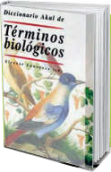

Biomas de América: sabana y desierto
Describe estos biomas en un texto de dos párrafos.
En el párrafo que corresponda incluye la definición de plantas xerófilas usando el dato que aparece abajo.

Xerófila.
Planta u hongo adaptado a un aporte limitado de agua y que es capaz de resistir la sequía.